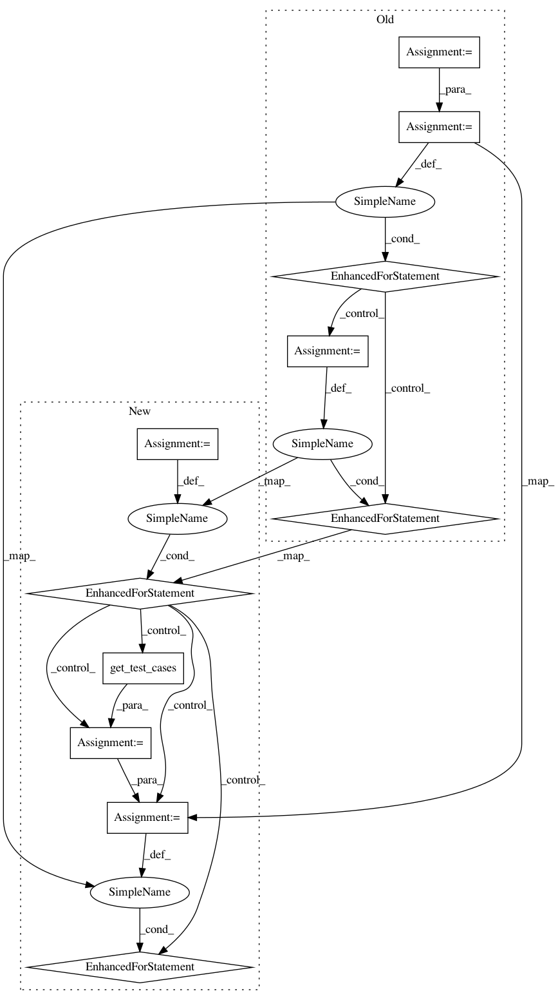

b70754ef7bef16dd0fe6391ff757b9033b73c100,tests/ignite/metrics/test_accuracy.py,,test_binary_input,#,94
Before Change
assert isinstance(acc.compute(), float)
assert accuracy_score(np_y, np_y_pred) == pytest.approx(acc.compute())
test_cases = [
// Binary accuracy on input of shape (N, L)
(torch.randint(0, 2, size=(10, 5)).long(), torch.randint(0, 2, size=(10, 5)).long(), 1),
(torch.randint(0, 2, size=(10, 1, 5)).long(), torch.randint(0, 2, size=(10, 1, 5)).long(), 1),
(torch.randint(0, 2, size=(100, 8)).long(), torch.randint(0, 2, size=(100, 8)).long(), 16),
// Binary accuracy on input of shape (N, H, W, ...)
(torch.randint(0, 2, size=(4, 1, 12, 10)).long(), torch.randint(0, 2, size=(4, 1, 12, 10)).long(), 1),
(torch.randint(0, 2, size=(4, 1, 12, 10)).long(), torch.randint(0, 2, size=(4, 1, 12, 10)).long(), 1),
(torch.randint(0, 2, size=(100, 8, 8)).long(), torch.randint(0, 2, size=(100, 8, 8)).long(), 16),
// Binary accuracy on input of shape (N, 1, ...) - Multiclass input
(torch.randint(0, 2, size=(4, 1)).long(), torch.randint(0, 2, size=(4,)).long(), 1),
(torch.randint(0, 2, size=(4, 1, 12)).long(), torch.randint(0, 2, size=(4, 12)).long(), 1),
(torch.randint(0, 2, size=(100, 1, 8, 8)).long(), torch.randint(0, 2, size=(100, 8, 8)).long(), 16),
// Multiclass input data of shape (N, ) and (N, C)
]
for y_pred, y, n_iters in test_cases:
// check multiple random inputs as random exact occurencies are rare
for _ in range(10):
_test(y_pred, y, n_iters)
def test_multiclass_wrong_inputs():
acc = Accuracy()
with pytest.raises(ValueError):
After Change
]
return test_cases
for _ in range(10):
// check multiple random inputs as random exact occurencies are rare
test_cases = get_test_cases()
for y_pred, y, n_iters in test_cases:
_test(y_pred, y, n_iters)
def test_multiclass_wrong_inputs():
acc = Accuracy()
with pytest.raises(ValueError):
In pattern: SUPERPATTERN
Frequency: 5
Non-data size: 11
Instances
Project Name: pytorch/ignite
Commit Name: b70754ef7bef16dd0fe6391ff757b9033b73c100
Time: 2021-03-12
Author: ahmedkhaled19701@gmail.com
File Name: tests/ignite/metrics/test_accuracy.py
Class Name:
Method Name: test_binary_input
Project Name: pytorch/ignite
Commit Name: 80e5ce816b6bf170c1f2a962e455bcd88bc11795
Time: 2021-03-12
Author: ahmedkhaled19701@gmail.com
File Name: tests/ignite/contrib/metrics/test_cohen_kappa.py
Class Name:
Method Name: test_binary_input_N
Project Name: pytorch/ignite
Commit Name: 80e5ce816b6bf170c1f2a962e455bcd88bc11795
Time: 2021-03-12
Author: ahmedkhaled19701@gmail.com
File Name: tests/ignite/contrib/metrics/test_average_precision.py
Class Name:
Method Name: _test_distrib_binary_input_N
Project Name: pytorch/ignite
Commit Name: 80e5ce816b6bf170c1f2a962e455bcd88bc11795
Time: 2021-03-12
Author: ahmedkhaled19701@gmail.com
File Name: tests/ignite/contrib/metrics/test_average_precision.py
Class Name:
Method Name: test_binary_input_N
Project Name: pytorch/ignite
Commit Name: b70754ef7bef16dd0fe6391ff757b9033b73c100
Time: 2021-03-12
Author: ahmedkhaled19701@gmail.com
File Name: tests/ignite/metrics/test_accuracy.py
Class Name:
Method Name: test_multiclass_input